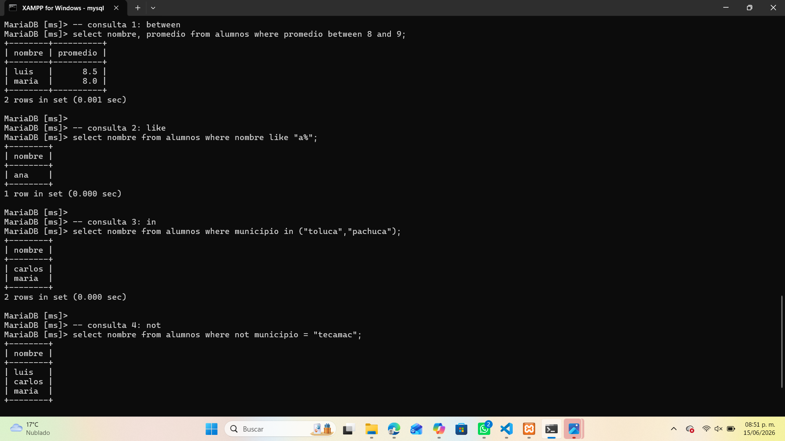
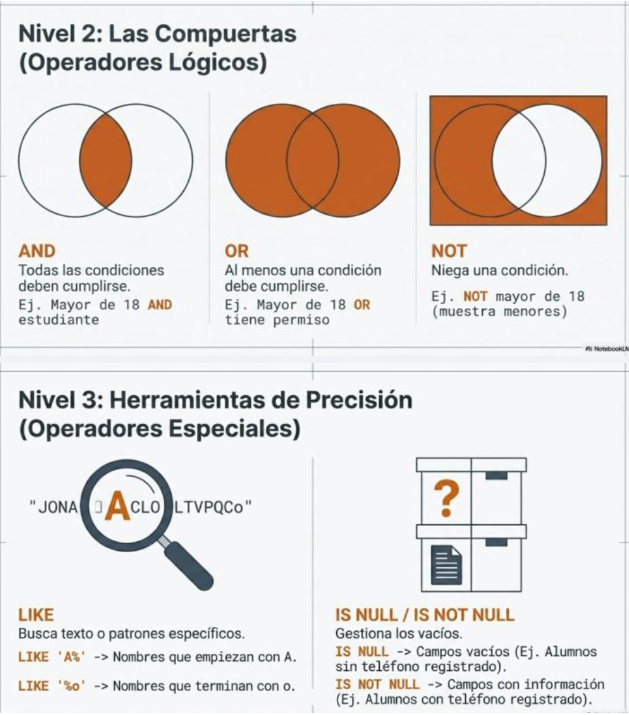

⚙️ Operadores en SQL
Los operadores permiten realizar comparaciones y aplicar condiciones dentro de las consultas SQL. Se dividen en dos tipos principales: lógicos y especiales.
📘 Operadores lógicos
| Operador | Descripción | Ejemplo |
|---|---|---|
| AND | Ambas condiciones deben cumplirse. | SELECT * FROM alumnos WHERE edad > 18 AND promedio >= 9; |
| OR | Al menos una condición debe cumplirse. | SELECT * FROM alumnos WHERE ciudad = 'Toluca' OR ciudad = 'Puebla'; |
| NOT | Niega una condición. | SELECT * FROM alumnos WHERE NOT municipio = 'Tecamac'; |
🔍 Operadores especiales
| Operador | Descripción | Ejemplo |
|---|---|---|
| BETWEEN | Selecciona valores dentro de un rango. | SELECT nombre, promedio FROM alumnos WHERE promedio BETWEEN 8 AND 9; |
| LIKE | Busca patrones de texto específicos. | SELECT nombre FROM alumnos WHERE nombre LIKE 'A%'; |
| IN | Busca coincidencias dentro de una lista de valores. | SELECT nombre FROM alumnos WHERE municipio IN ('Toluca','Pachuca'); |
| IS NULL / IS NOT NULL | Evalúa si un campo está vacío o contiene datos. | SELECT nombre FROM alumnos WHERE email IS NOT NULL; |
🧩 Ejemplo práctico en MySQL
En este ejemplo se muestran consultas con los operadores BETWEEN, LIKE, IN y NOT:

📊 Infografía general

💡 Recomendaciones
- Combina operadores para crear filtros más precisos.
- Usa LIKE con comodines (%) para buscar coincidencias parciales.
- Aplica BETWEEN para rangos numéricos o de fechas.
- Evita usar NOT en exceso, puede complicar la lectura de la consulta.
- Verifica los resultados con SELECT antes de aplicar cambios.